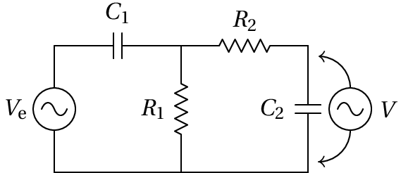
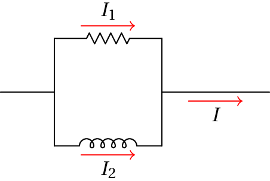

No fim da década de 1880 viveu-se nos Estados Unidos da América um
período conhecido como a Guerra das Correntes. Nessa época já
existia uma rede elétrica pública, usada principalmente para alimentar
lâmpadas incandescentes e motores elétricos. A exploração dessa rede
elétrica revertia grandes benefícios a Thomas
A. Edison que tinha obtido várias patentes pela
invenção da lâmpada e de vários dispositivos para gerar corrente
contínua. Outras pessoas tentaram entrar nesse novo negócio milionário
com as suas inovações; George Westinghouse, que já tinha tido sucesso comercial
com as suas próprias patentes, contratou
Nicola Tesla, um
cientista brilhante, imigrante da Croácia. Tesla obteve uma patente
pelo dispositivo esquematizado acima, utilizado para produzir e
distribuir corrente alternada. A guerra das correntes acabaria por ser
ganha pelo sistema de corrente alternada de Tesla e Westinghouse; uma
das principais vantagens sobre o sistema de corrente contínua de
Edison é a facilidade de poder aumentar ou diminuir a tensão por meio
de transformadores.
11.1. Circuito LC
No circuito do lado esquerdo da figura 11.1, o interruptor
está fechado (há muito tempo) e o interruptor
aberto. Num instante,
, abre-se o interruptor
e, simultaneamente, fecha-se o interruptor
.
Como tal, em
o circuito equivalente é o representado no lado
direito da figura 11.1, denominado circuito
LC.
Figura 11.1: Circuito LC, em
(esquerda) e circuito equivalente em
(direita), com
aberto e
fechado.
A impedância do condensador é
e a do indutor
. A
transformada da voltagem no indutor,
, não é simplesmente
, porque no instante
a corrente que o percorre não
é nula. No domínio do tempo, a relação entre a voltagem e a corrente
no indutor é,
(11.1)
e a transformada de Laplace é então:
(11.2)
No condensador não há que acrescentar nenhum termo adicional, porque a
sua carga inicial é nula; a transformada da voltagem no condensador é
. A lei das malhas conduz à equação:
(11.3)
Esta equação algébrica é a transformada de Laplace da equação
diferencial (observe-se que
, porque o circuito está no estado
estacionário no instante em
):
(11.4)
que é a equação de um oscilador harmónico simples. O polinómio caraterístico dessa equação linear
tem duas raízes imaginárias
e a
solução da equação é
(11.5)
em que
é a frequência angular
do circuito,
(11.6)
A carga no condensador, em função do tempo, é
(11.7)
e como tal, a corrente e a carga oscilam com frequência
, desfasadas 180
, de forma que quando uma delas
é nula, a outra tem o seu valor absoluto máximo (figura 11.2).
Figura 11.2: Corrente e carga no circuito LC
(
).
A corrente 11.5 chama-se
corrente alternada e a
carga 11.7 é uma carga
alternada. No capítulo sobre indução eletromagnética também se estudou
um gerador que produz tensão alternada (equação 9.10). Em
geral, uma função alternada é uma função
periódica com valor médio igual a zero; a carga e a corrente no
circuito LC, assim como a tensão do gerador de tensão alternada, são 3
exemplos particulares em que a função alternada é o seno ou cosseno.
11.2. Funções sinusoidais
Uma função sinusoidal
é uma função alternada que oscila entre dois valores
e
e tem a mesma forma da função seno ou cosseno, como
mostra a figura 11.3. Basta saber os valores das 3 distâncias
,
e
referidas na figura, para
caraterizar cada uma dessas funções.
Figura 11.3: Função sinusoidal com período
e valor máximo
.
O intervalo
entre dois máximos ou dois mínimos sucessivos é o
período da função e o seu
inverso,
, é a frequência.
Designando por
o valor absoluto da coordenada
onde a
função atinge o seu valor máximo
, pela última vez
antes de
= 0, define-se a fase da função como:
(11.8)
Uma função sinusoidal também pode ser caraterizada pelo seu valor
máximo
(chamado amplitude), a sua fase
e a sua frequência angular:
, definida por:
(11.9)
As funções sinusoidais têm todas a forma geral:
(11.10)
Note-se que é possível representar a mesma função de várias formas.
Pode"-se substituir o cosseno por seno e subtrair
à fase,
sem alterar o resultado. Pode-se também inverter os sinais da
frequência angular e da fase, simultaneamente, e ainda somar ou
subtrair qualquer múltiplo de
à fase. No entanto, para
facilitar a caraterização dessas funções, usaremos apenas a função
cosseno, frequências angulares positivas e fases no intervalo [0,
[. Essas 3 escolhas, embora arbitrárias, são habituais.
Duas funções sinusoidais que não tenham o mesmo valor máximo, fase e
frequência angular, são necessariamente diferentes. E duas funções
sinusoidais com a mesma frequência angular terão, necessariamente, a
mesma frequência e o mesmo período.
11.3. Fasores
As funções sinusoidais com a forma 11.10 podem ainda ser
escritas usando a fórmula de Euler e a função
que extrai a parte real de um número complexo
:
(11.11)
Esta forma facilita a identificação de uma propriedade importante na soma
de duas funções sinusoidais com diferentes valores máximos e fases, mas
com a mesma frequência:
(11.12)
Ou seja, a soma de duas funções sinusoidais com a mesma frequência é
também uma função sinusoidal com a mesma frequência.
Quando se trabalha com várias funções sinusoidais, todas com a mesma
frequência, podem-se admitir implicitamente a função
e a
parte que depende do tempo,
,
representando cada função pelos números complexos que multiplicam essa
exponencial:
(11.13)
Essas expressões complexas que definem o valor máximo e a fase das funções
sinusoidais são denominadas fasores. O uso
de letras negritas é porque estes objetos têm algumas das propriedades
dos vetores e dos números complexos, mas não são realmente nem vetores
nem números complexos.
Mais concretamente, a soma de duas funções sinusoidais com a mesma
frequência é outra função sinusoidal da mesma frequência, e o respetivo
fasor é obtido somando os números complexos ou os vetores que representam
os fasores das funções somadas (ver exemplo abaixo). No entanto, como o
produto entre duas funções sinusoidais com a mesma frequência é igual a
uma função constante mais uma função sinusoidal com o dobro da
frequência, o produto entre fasores não pode ser definido pelo simples
produto entre números complexos nem pelo produto entre vetores (na secção
11.6 explica-se como obter o produto entre funções
sinusoidais). Como tal, os fasores são outro tipo de objetos diferentes
dos números complexos e dos vetores.
Outra forma útil de representar os fasores consiste em escrever o valor
máximo e a fase separados pelo símbolo de ângulo:
. É também útil a representação
vetorial no plano, em que em
= 0 o fasor é um vetor desde a origem
até o ponto (
,
, como mostra a figura 11.4. Em
> 0, esse vetor roda um ângulo igual a
, terminando no
ponto (
,
. Ou seja, o vetor que
representa o fasor no plano roda no sentido anti-horário, com velocidade
angular constante
. O valor da função sinusoidal (parte real) é
a projeção desse vetor no eixo horizontal. Assim sendo, enquanto o vetor
roda no plano, o valor da função oscila entre
e
.
Figura 11.4: Representação gráfica de um
fasor
.
Exemplo 11.1
Num nó num circuito de corrente alternada entram duas correntes e saem
outras duas correntes. Sabendo que as expressões das correntes que entram
são
e
, e uma das correntes que sai é
, calcule a outra corrente que sai,
indicando o seu valor máximo e a sua fase.
Resolução. Em termos matemáticos, o que está a ser pedido é o
cálculo de
de forma a obter uma única função cosseno.
Começando por escrever os fasores das 3 correntes, no caso da primeira
corrente é necessário subtrair
à fase, para substituir o seno
por cosseno. O fasor da quarta corrente é a soma dos dois primeiros
fasores, subtraído do terceiro:
A seguir, calculam-se as partes real e imaginária de cada fasor, tarefa
que é facilitada usando a representação gráfica (lado esquerdo na
figura 11.5).
Figura 11.5: Soma de fasores.
O fasor da quarta corrente é então:
O valor máximo desse fasor é a hipotenusa do triângulo retângulo com
catetos de
e 1 unidades, nomeadamente
. A fase
é o ângulo oposto ao cateto de comprimento 1 nesse triângulo retângulo,
. O resultado obtido é:
Embora os fasores não sejam verdadeiros vetores, somam-se exatamente como
se fossem vetores, somando coordenadas, ou geometricamente, como no lado
direito da figura 11.5.
11.4. Tensão alternada
Uma tensão alternada é um sinal
sinusoidal dado por:
(11.14)
Nos diagramas de circuito, uma fonte ideal de tensão alternada
representa-se pelo símbolo indicado na figura 11.6. Junto do
símbolo indica-se a tensão máxima e pode também indicar-se a
frequência ou a fase. Os valores apresentados na figura são os que estão
em uso na rede elétrica pública da União Europeia: frequência
de
50 Hz e tensão máxima de 325 V.
Figura 11.6: Três formas de representar fonte ideal de
tensão alternada com tensão máxima de 325 V e frequência de 50 Hz.
Se no diagrama identificam-se os terminais com os sinais + e −, isso
quererá dizer que a expressão dada para a tensão na fonte representa a
diferença de potencial entre o terminal identificado com o sinal + e o
terminal com o sinal −. Observe-se que essa diferença de potencial muda
de sinal periodicamente e em alguns intervalos o potencial no terminal −
passa a ser maior do que no terminal +. Por vezes utiliza-se também uma
ligação à terra e, nesse caso, não é necessário indicar sinais mas
admite-se que a expressão dada para a tensão da fonte é a diferença de
potencial do terminal que não está ligado à terra menos o potencial na
terra, que costuma ser arbitrado igual a zero.
11.5. Impedância complexa
Se todas as fontes de tensão num circuito forem fontes de tensão
alternada com a mesma frequência, em qualquer parte do circuito a tensão
é também alternada, com a mesma frequência, já que a regra das malhas
garante que a tensão é igual à soma das outras tensões na mesma malha,
com sinal oposto e conclui-se que se a tensão em algum segmento da malha
é sinusoidal, a tensão em qualquer outro segmento também será
sinusoidal e com a mesma frequência.
No capítulo anterior deduziu-se a lei de Ohm generalizada para as
transformadas de Laplace da tensão e da corrente
(equação 10.28):
(11.15)
Como
é uma função sinusoidal, a sua transformada de Laplace é (ver
o apêndice C):
(11.16)
como tal,
(11.17)
Admitindo que
não é igual a zero, a expansão em
frações parciais da expressão no segundo membro deve incluir um termo
com denominador
(11.18)
em que o termo
é a corrente
transitória, que não tem nenhum
fator
no denominador.
Substituindo essa expressão e a transformada da tensão na lei de Ohm
generalizada, obtém-se:
(11.19)
Multiplicando ambos os membros da equação por
e
substituindo
por
obtém-se:
(11.20)
Ou seja, os fasores da tensão e da corrente também verificam a lei de Ohm
generalizada, com a frequência real
substituída por uma frequência
imaginária
, o que conduz a uma impedância
complexa
.
Alguns autores preferem chamar
simplesmente
impedância; também pode-se usar a notação
, em vez de
, mas
mostra de forma
explícita a sua relação com a impedância generalizada
.
A impedância complexa
é uma função complexa que
pode ser dividida nas suas partes real e imaginária:
(11.21)
sendo a função real
designada de
resistência e a função
real
designada de
reatância. A resistência é
sempre positiva, independentemente da frequência angular
,
enquanto que a reatância pode ser positiva para algumas frequências
(reatância indutiva) e negativa para
outras frequências (reatância
capacitiva).
Para um determinado valor de
, o módulo
e fase
da impedância complexa
podem ser calculados usando
a representação gráfica de
no plano complexo,
obtendo-se o triângulo de impedância
apresentado na figura 11.7. Como
não pode ter valores
negativos, o ângulo
situa-se sempre entre
e
radianos.
Figura 11.7: Triângulo de impedância, com a resistência
e a reatância
nos catetos.
Note-se que a impedância complexa
não é um fasor
mas sim um número complexo ordinário, que pode ser multiplicada e somada
a outras impedâncias usando as regras do produto e a adição de números
complexos. Também se pode multiplicar ou dividir um fasor por várias
impedâncias e o resultado é outro fasor com a mesma frequência.
Se os fasores da tensão e da corrente forem
e
, a
lei de Ohm para fasores (equação 11.20) resulta em:
(11.22)
podendo-se portanto separar a equação complexa 11.20 em duas
equações reais:
(11.23)
11.5.1. Resistências
Numa resistência, a impedância generalizada é independente da
frequência e igual a
; como tal, o módulo da impedância complexa é
e a sua fase é nula
. As equações 11.23
indicam que as fases de
e
são iguais e os seus
valores máximos verificam a relação,
(11.24)
Os vetores no lado esquerdo da figura 11.8 são os fasores no
instante
= 0, mas como os dois vetores rodam com a mesma velocidade
angular, estarão sempre na mesma direção e sentido em qualquer instante.
Imaginando esses dois vetores a rodar no sentido anti-horário, com a mesma
velocidade angular, as suas projeções no eixo real (tensão e corrente em
função do tempo) são as funções apresentadas no lado direito da
figura. Diz-se que a tensão e a corrente estão em fase: os dois
vetores têm sempre a mesma direção e sentido, de forma que ambas as
funções atingem os respetivos valores máximo e mínimo em simultâneo.
Figura 11.8: Fasores da tensão e da corrente numa
resistência.
11.5.2. Condensadores
Nos condensadores, a impedância generalizada é
e a impedância
complexa é então:
(11.25)
Em particular, a reatância de um condensador é negativa e inversamente
proporcional à frequência angular,
Ou seja, a fase da corrente é
maior que a da tensão. Na
representação vetorial dos fasores, no lado esquerdo da figura
11.9, a corrente é perpendicular à tensão e está adiantada em
relação ao sentido de rotação anti-horário. Os vetores estão nas
posições em que estão os fasores em
= 0; enquanto esses vetores
rodam no sentido anti-horário, com velocidade angular constante, a
projeção no eixo das abcissas produz as funções representadas no lado
direito da figura. Como os dois vetores rodam com a mesma velocidade
angular, são perpendiculares em qualquer instante. O desfasamento de
entre a corrente e a tensão também observa-se nos gráficos do
lado direito, pelo facto de
ter valor máximo ou mínimo cada vez
que
é nula. E o facto de ser a corrente a que está adiantada em
relação à tensão descobre-se observando dois máximos (ou mínimos),
das duas funções
e
, que estejam próximos entre si. O
máximo de
ocorre sempre antes do que o máximo de
).
Figura 11.9: Fasores da tensão e da corrente num condensador.
11.5.3. Indutores
Nos indutores a impedância generalizada é
, sendo a impedância
complexa:
(11.27)
A reatância de um indutor é positiva e diretamente proporcional à
frequência angular:
(11.28)
sendo a sua resistência nula.
Pelas equações 11.23 conclui-se que a fase da corrente é
menor que a da tensão. Na representação gráfica dos fasores
(lado esquerdo da figura 11.10) o fasor da corrente é
perpendicular ao da tensão e está atrasado, em relação ao sentido da
rotação. Como os dois vetores rodam com a mesma velocidade angular, em
qualquer outro instante também são perpendiculares.
As projeções no eixo real quando os vetores rodam no sentido
anti-horário conduzem às duas funções representadas no lado direito da
figura. O atraso em
do fasor da corrente é visível no gráfico
das funções, porque olhando para os valores máximos dessas duas
funções, que estão mais próximos entre si, primeiro ocorre o máximo de
e a seguir o de
.
Figura 11.10: Fasores da tensão e da corrente num indutor.
Exemplo 11.2
Cacule a tensão e corrente instantâneas em todos os elementos do circuito
representado no diagrama.
Resolução. Este circuito é o mesmo que já foi analisado no
exemplo 10.3 do capítulo anterior. Usando o mesmo sistema de
unidades tem-se: impedância em kΩ, capacidade em µF, indutância
em H, tempo em ms, frequência em kHz, tensão em V e corrente em mA. A
frequência angular da fonte é:
Hz, mas
como deve ser convertida para kHz, tem o valor
/10.
A impedância da resistência é 2.5, a do condensador
e a do indutor é
. Como a resistência
está em série com o indutor, podem ser substituídos por um único
elemento com impedância igual à soma das impedâncias:
Como os dois elementos no circuito simplificado estão em paralelo, o fasor
da tensão é o mesmo para os dois e igual ao fasor da fonte:
. Dividindo esse fasor pelas impedâncias dos dois
elementos calculam-se as correntes correspondentes. Em seguida,
multiplicando o fasor da segunda corrente pelas impedâncias da
resistência e do indutor, calculam-se os fasores das tensões:
A partir dos fasores podem-se exprimir as tensões e correntes
instantâneas.
Condensador:
Resistência:
Indutor:
Interessa mostrar a resolução deste exemplo usando o Maxima. As
impedâncias do condensador, resistência e indutor representam-se por
,
e
, respetivamente e
representa a impedância da
associação em série da resistência com o indutor em série. Para obter
maior precisão numérica, escrevem-se os valores dados no enunciado na
forma de números racionais:
Os fasores da tensão e a corrente no condensador são:
(%i6) V1: 325$
(%i7) I1: V1/z1$
A corrente máxima e a fase são o módulo e a fase do número complexo
I1, que no Maxima são obtidos com as funções
cabs e carg (cabs quer dizer
complex absolute value e cargcomplex argument. O
módulo e a fase de um número complexo também costumam chamarem-se valor
absoluto e argumento.)
11.6. Potência nos circuitos de corrente alternada
Não há transferência efetiva de carga nos circuitos de corrente
alternada. As cargas de condução simplesmente oscilam à volta de uma
posição de equilíbrio. Apesar de não haver transferência efetiva de
cargas, há dissipação efetiva de energia elétrica, pois a oscilação
das cargas é contrariada pela resistência dos condutores e há efeito
Joule, independentemente do sentido da corrente.
Em qualquer dispositivo passivo num circuito com fonte de tensão
alternada, a tensão e a corrente são funções sinusoidais com a mesma
frequência da fonte, após uma possível resposta transitória inicial:
(11.29)
A potência
instantânea,
, é a potência no dispositivo em qualquer instante
(11.30)
Usando uma relação trigonométrica para o produto de dois cossenos e o
facto de ser
(equação 11.23), conclui-se que a expressão anterior é
equivalente a:
(11.31)
Note-se que o primeiro cosseno dentro dos parêntesis retos em
11.31 é uma função sinusoidal, com frequência igual ao dobro
da frequência da fonte, enquanto o segundo cosseno é uma função
constante. Ou seja, o produto das duas funções sinusoidais (
e
)
com a mesma frequência não conduz outra função sinusoidal com a mesma
frequência, mas a uma função sinusoidal com o dobro da frequência,
deslocada no eixo das ordenadas.
A potência instantânea 11.31 pode ser positiva ou negativa em
alguns intervalos e nula em alguns instantes, dependendo do valor da
constante
, chamada fator
de potência. Como
está entre
e
, o fator de potência situa-se entre 0 e 1.
Se a reatância for nula (dispositivo resistivo) e a fase da impedância
(
) é nulo, o fator de potência é igual a 1 e a potência
instantânea é sempre positiva, indicando que o dispositivo está sempre a
dissipar energia. Já se a resistência for nula (dispositivo reativo), a
fase da impedância é
, o fator de potência é nulo e os
intervalos em que a potência instantânea é positiva (dissipação de
energia) são do mesmo comprimento que os intervalos em que é negativa
(fornecimento de energia); a potência média é nula.
No caso geral, em que o fator de potência é maior que 0 e menor que 1, os
intervalos em que há dissipação de energia são mais compridos do que os
intervalos em que há fornecimento de energia e, em média, o circuito
dissipa energia.
O valor médio da potência,
, calcula-se integrando a função
11.31 durante um período e dividindo pelo valor do período. O
integral do primeiro termo é nulo, durante um período, enquanto que o
valor médio do termo constante é igual a si próprio. Consequentemente, a
potência média é:
(11.32)
e tem valor positivo ou nulo, indicando que, em média o dispositivo
passivo não pode fornecer energia.
É também habitual definir a tensão
eficaz e a corrente eficaz:
(11.33)
e como tal, a potência média é igual ao produto da tensão e corrente
eficazes e o fator de potência:
A tensão máxima de 325 V usada na União Europeia corresponde a uma
tensão eficaz de 230 V. No continente americano usa-se tensão máxima de
170 V, a 60 Hz, que corresponde a uma tensão eficaz de 120 V.
11.7. Filtros de frequência
A equação 10.36, obtida no capítulo anterior, é válida para
qualquer sinal de entrada. Para um sinal de entrada
sinusoidal,
usando a expressão para a transformada de Laplace das funções
sinusoidais (apêndice C) obtém-se,
(11.34)
Se
tiver um valor finito, a expansão de
em frações parciais conduz a
(11.35)
onde
é um número complexo, que corresponde ao fasor da
saída (após a resposta transitória), e o termo
é a transformada da tensão de resposta
transitória, que não tem o fator
no
denominador.
Substituindo essa expansão na equação 11.34, obtém-se:
(11.36)
Multiplicando ambos os membros da equação por
e
substituindo
por
obtém-se:
(11.37)
onde a função
é uma função complexa, de
variável real
, chamada função de
resposta em frequência. Como tal, se a
tensão de entrada for a tensão alternada
, a tensão de saída será
(11.38)
onde
e
são o módulo e a fase da
função complexa
.
Por exemplo, no caso do filtro passa-alto, mostrou-se no capítulo
anterior que a função de transferência é (equação 10.38):
(11.39)
A função de resposta em frequência é então:
(11.40)
e o seu módulo e fase são:
(11.41)
A figura 11.11 mostra o módulo da função de resposta em
frequência num filtro passa-alto com
frequência angular de corte,
,
igual a 0.5 e a figura 11.12 mostra a fase dessa
função. Note-se que quando a frequência angular for igual à frequência
de corte
,
terá módulo
e fase igual a
.
Figura 11.11: Módulo da função de resposta em frequência num filtro
passa-alto com frequência angular de corte
unidades.
Figura 11.12: Fase da função de resposta em frequência num filtro
passa-alto com frequência angular de corte
unidades.
Vários filtros podem ser combinados de forma sequencial, e a função de
resposta é o produto das funções de todos os filtros na sequência. Por
exemplo, o filtro passa-banda da
figura 11.13 é a combinação de um filtro passa-alto, com
frequência angular de corte
e um filtro
passa-baixo, com frequência angular de corte
.

Figura 11.13: Filtro passa-banda.
A função de resposta em frequência desse filtro é a seguinte
(problema 11):
(11.42)
onde
, chamada ganho, é uma constante
sem unidades. O módulo dessa função,
, é nulo
em
e
, e tem um valor máximo
, quando a frequência angular
for igual à média geométrica das duas frequências de corte:
.
Um filtro ideal deveria ter uma função de resposta nula, para as
frequências que se pretende eliminar, e 1 nas outras frequências. Com
circuitos mais complicados conseguem-se obter filtros com
comportamento mais próximo do ideal. Outro fator a ter em conta é a
resposta transitória, que tem sido ignorada por ser nula após algum
tempo, mas num filtro de boa qualidade é necessário garantir que a
resposta transitória desaparece o mais rapidamente possível.
11.8. Ressonância
Quando um circuito com condensadores e indutores é ligado a diferentes
fontes com a mesma tensão máxima
, mas com diferentes
frequências, a potência absorvida pelo circuito varia em função da
frequência. Normalmente, existe uma frequência de ressonância
tal que a potência dissipada pelo circuito é máxima. Se a frequência
da fonte é igual à frequência de ressonância do circuito, diz-se que o
circuito está em ressonância com a fonte.
No caso particular do circuito RLC, com uma resistência, um indutor e
um condensador em série, a reatância equivalente
é função contínua
da frequência
. Quando
se aproxima de infinito ou de zero, o
valor absoluto da reatância aproxima-se de infinito. Como tal, a
corrente nos 3 dispositivos é nula. A frequência de ressonância é a
frequência que faz com que a reatância seja nula e o módulo da
impedância seja mínimo. Isso implica que o ângulo da impedância
(
) será nulo e o fator de potência (
) igual a
1. A corrente máxima e a potência média em função de
são ambas
máximas e a tensão e a corrente estão em fase.
A frequência (ou frequências) de ressonância é um valor caraterístico
de cada circuito. Nos circuitos em que os indutores e condensadores
não estão em série, a frequência de ressonância pode surgir quando a
reatância não é nula, com fator de potência diferente de 1, ou seja
corrente desfasada da voltagem.
Exemplo 11.3
Calcule a frequência de ressonância do circuito e a potência média
máxima que pode fornecer a este circuito uma fonte com tensão máxima
.
Resolução. Com a resistência em MΩ e a capacidade em
pF, convém usar µs para a unidade de tempo e, portanto, MHz para a
frequência e H para a indutância.
A impedância total do circuito é a soma das 3 impedâncias:
Observe-se que a parte real da impedância equivalente não depende da
frequência, porque o condensador e o indutor estão em série e, como tal,
o valor mínimo do módulo da impedância obtém-se quando a parte
imaginária seja igual a zero:
No sistema de unidades usado, a frequência de ressonância é
MHz, igual a
kHz.
Se a fonte tivesse essa frequência, a impedância equivalente seria real,
~M
, e a corrente máxima teria o valor
(µA, se
estiver em
volts). A potência média máxima é
(µW, se
estiver em volts).
No circuito do exemplo anterior, a tensão de entrada carrega e descarrega
o condensador. Inicialmente, a carga no condensador oscila com a
frequência de oscilação da tensão na fonte; mas quando a carga no
condensador é elevada, a diferença de potencial do condensador pode
contrariar a tensão da fonte, impedindo a entrada de mais carga.
A situação é semelhante a uma massa pendurada de uma mola elástica, na
qual atua outra força externa que tenta manter a massa oscilando para cima
e para baixo. Se a força externa não oscila com a uma frequência igual
à frequência própria de oscilação da mola elástica, há momentos em
que a força externa está a tentar fazer subir a massa, enquanto a mola
elástica faz força no sentido oposto.
No caso do circuito, se a fonte não existisse mas o condensador tivesse
uma carga inicial, começaria a descarregar, produzindo corrente. No
momento em que o condensador descarrega completamente, o indutor faz com
que a corrente persista por alguns instantes, recarregando o condensador
com cargas de sinais opostos à carga inicial. O ciclo repete-se, com uma
frequência própria do circuito. No entanto, a resistência faz com que a
carga do condensador seja menor em cada ciclo, até desaparecer
(equilíbrio estável). Existe ressonância quando a fonte oscila com a
frequência própria do circuito.
Se a resistência fosse nula, quando a frequência da fonte fosse a
frequência de ressonância,
seria nula e aparentemente
seria infinita. No entanto, a corrente
não aumenta instantaneamente até esse valor, mas sim gradualmente, com as
oscilações da carga no condensador. Quando essa carga máxima se torna
muito elevada, há rutura do dielétrico no condensador ou a corrente
elevada queima o indutor.
Perguntas
(Para conferir a sua resposta, clique nela.)
As expressões das correntes no segmento de circuito representado no
diagrama são
Encontre a expressão para
.

Um condensador de 2.73 µF e uma resistência de 1166 Ω
estão ligados em série a uma fonte de tensão alternada com frequência de
50 Hz e tensão máxima de 325 V. Calcule a corrente eficaz na
resistência.
247 mA
139 mA
99 mA
212 mA
170 mA
Um condensador de 2.73 µF e uma resistência de 1166 Ω
estão ligados em série a uma fonte de tensão alternada de 50 Hz. Pode-se
concluir então que a tensão da fonte está:
Adiantada 90° em relação à corrente.
Adiantada 45° em relação à corrente.
Atrasada 90° em relação à corrente.
Atrasada 45° em relação à corrente.
Em fase com a corrente.
Qual das afirmações seguintes é verdadeira, em relação a uma
bobina de 2 mH e um condensador de 5 pF?
O valor absoluto da reatância da bobina é menor.
O valor absoluto da reatância do condensador é menor.
Se a corrente for contínua, o valor absoluto da reatância da bobina é menor.
Se a corrente for contínua, o valor absoluto da reatância do condensador é
menor.
Se a corrente for contínua, a reatância dos dois dispositivos é nula.
Num circuito RLC de corrente alternada, em série, quando a
reatância equivalente for nula, qual das seguintes afirmações é
verdadeira:
A impedância é nula.
O fator de potência é nulo.
O ângulo de desfasamento é nulo.
A corrente é nula.
A tensão é nula.
Problemas
Sabendo que o fasor representado na figura 11.4 é
, determine a expressão para a
função sinusoidal,
, representada por esse fasor.
A resistência de uma bobina é 150 Ω e a sua indutância é
1.4 H. A bobina é ligada à rede elétrica com tensão máxima 325 V e
frequência de 50 Hz. Encontre a expressão para a corrente na bobina em
função do tempo
.
Uma bobina, com indutância de 36 mH e resistência de 40 Ω,
liga-se em paralelo com um condensador de 32 nF e com uma fonte de
tensão alternada
(em volts, e o tempo
em segundos). Calcule: (a) A corrente máxima na bobina.
(b) A corrente eficaz no condensador. (c) As potências
médias dissipadas na bobina e no condensador.
Demonstre que a transformada inversa da equação 11.3 conduz à
corrente alternada indicada na equação 11.5.
No problema 9 do capítulo 9, determine a frequência do
circuito e os valores máximos da corrente e da carga.
Nos dois circuitos representados na figura, calcule
a corrente e a tensão em todos os elementos do circuito.
A figura mostra um filtro
rejeita-banda que atenua as frequências angulares próximas de
1 kHz. (a) Determine a função de resposta em frequência,
, do circuito. (b) Mostre que para
kHz,
é igual a zero. (c)
Calcule o módulo de
e trace o seu
gráfico para
entre 0 e 2 kHz.
Num segmento de um circuito de corrente alternada a tensão em função
do tempo é dada pela expressão
(em
volt, com
em milissegundos) e a corrente é
(µA, com
em ms). (a) Calcule
a resistência e reatância desse segmento. (b) O segmento do
circuito avariou e pretende-se substituí-lo com resistências,
condensadores ou indutores, mas o orçamento só permite comprar dois
dispositivos. Quais dispositivos deviam ser comprados, com que
valores, e como deviam ser ligados no circuito?
A figura mostra a tensão e a corrente num condensador. A corrente é
produzida pela tensão: se não houver tensão elétrica, não há
corrente. Como se explica então que no instante
a corrente seja
diferente de zero, sendo a tensão nula?
A figura mostra o ecrã de um osciloscópio onde aparecem a tensão e a
corrente num elemento de um circuito. As distâncias
e
foram
medidas diretamente no ecrã, obtendo-se os valores
cm,
cm. O osciloscópio também permite determinar que a tensão máxima
é
V e a corrente máxima é
mA. Com
esses dados, calcule a parte real e a parte imaginária da impedância
do elemento do circuito.
Considere o filtro passa-banda:
(a) Demonstre que a função de resposta em frequência é a
expressão na equação \ref{eq-11.42}, onde
,
e
(sugestão: encontre
primeiro a função de transferência
, usando as expressões
e
para as impedâncias dos
dois condensadores). (b) Determine o valor máximo de
e a frequência angular
em que essa
função é máxima. (c) Trace o gráfico de
, com
, entre 0 e 3 kHz, no caso em
que
µF,
µF,
k
e
k
Respostas
Perguntas:1. E. 2. B. 3. D.
4. C. 5. C.
Problemas
A.
(a) 7.94 A. (b) 3.68 mA (c) 1.261 kW na bobina e
0 no condensador.
A expressão para a transformada da corrente é
,
onde
e a transformada inversa é a expressão
11.5.
kHz,
mA,
µC.
(a) Tensões em V, correntes em mA, tempo em ms.
Condensador:
Resistência:
Indutor:
(b) Tensões em V, correntes em mA, tempo em ms.
Condensador:
Resistência:
Indutor:
(a)
(c)
(a) resistência 2.63 MΩ e reatância -1.44 MΩ. (b) Uma
resistência de 2.63 MΩ e um condensador de 2.21 nF, ligados em série.
A tensão e corrente apresentadas no gráfico apenas poderão ter essas
formas sinusoidais algum tempo após ter sido ligada a fonte, quando a
resposta transitória já tiver desaparecido. Se a fonte de tensão fosse
ligada apenas no instante
, a corrente não poderia ter nesse
instante um valor diferente de zero; em vez da função sinusoidal no
gráfico, teríamos uma função que parte de zero e se aproxima
gradualmente da função sinusoidal (resposta transitória mais resposta
sinusoidal).


(clique para continuar)